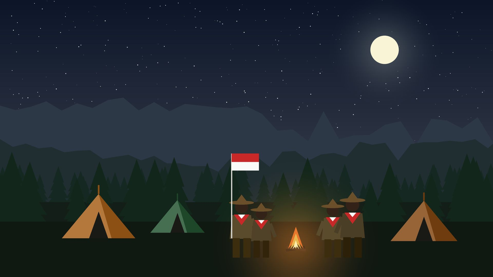

Siaga
Belajar sambil bermain dalam barung dan perindukan: lagu, cerita, dan keterampilan dasar.

Salam Pramuka!
Kami gugus depan yang membina adik-adik Siaga sampai Penegak menjadi pribadi mandiri, peduli, dan tangguh lewat petualangan setiap pekan.
Golongan
Setiap golongan punya cara belajar sendiri, disesuaikan dengan usia dan kemampuan anggotanya.
Belajar sambil bermain dalam barung dan perindukan: lagu, cerita, dan keterampilan dasar.
Berkegiatan dalam regu: tali-temali, sandi, penjelajahan, dan perkemahan.
Memimpin dan mengabdi di ambalan: bakti masyarakat, raimuna, dan pelatihan kepemimpinan.
Merancang program dan pengabdian nyata di racana bersama masyarakat.
Kabar Kegiatan

Regu penggalang belajar membaca peta, kompas, dan jejak sambil menyusuri jalur hutan pinus.
Cerita kegiatan terbaru akan segera dibagikan di sini.
Agenda terdekat
Siapkan perlengkapanmu, petualangan berikutnya segera dimulai.
Lihat semua agendaAgenda berikutnya sedang disiapkan para pembina.
Jejak kami
Prestasi
 Provinsi
ProvinsiRegu Elang
Daftar prestasi akan segera diperbarui.
Penerimaan anggota baru
Pendaftaran terbuka untuk semua siswa. Tidak perlu pengalaman, cukup semangat belajar dan mau berkembang bersama.
Daftar sekarang